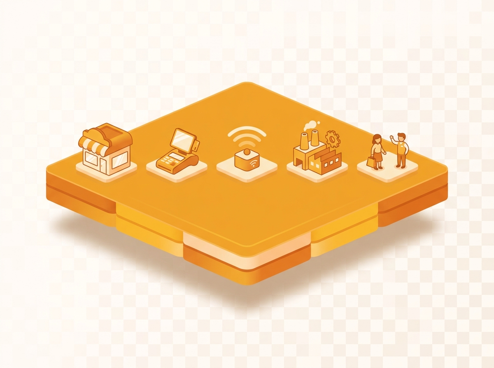
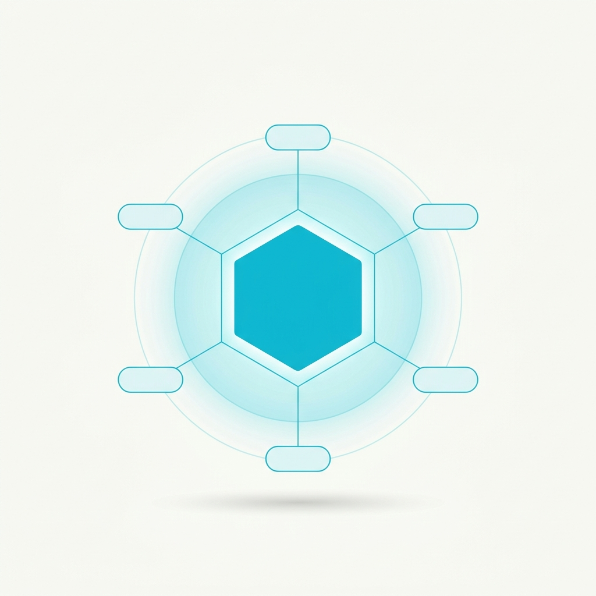

肖準加入騰雲，
啟動企業
AI 工作者新時代
承接騰雲的 Physical Space Runtime，
建構 Enterprise AI OS，
帶來第一支 AI Agent 工作團隊。
肖準 + 騰雲 = The Pocket Company
不是單純併購 ── 是兩種能力，在 AI 時代第一次合而為一。

騰雲 — 二十年企業基建
- TPOS · HOYABOX · 智慧 POS 與行動終端
- TCRM · TCMS · 顧客關係與商業管理
- 橫跨零售、餐飲、商場、飯店的真實人場貨
肖準 — 生產級 Agent 能力
- OpenClaw · 開源 Agent 框架
- 5 位專業 Agent · Pandora / Moana / Banana / Adriana / Stacey
- User-Level Memory · 每個帳號都有專屬 AI
合而為一 → The Pocket Company
騰雲底下、最靠近商業現場的AI Agent 應用節點 ──
把二十年累積的場域、資料、人，第一次真正交到 AI 手上。
董事長剛談到 — Physical Space Runtime
下一個運算時代，AI 不只活在螢幕裡，而是進入真實的空間。

Runtime 是什麼？
讓 AI 跑得起來、接得上現場、能即時執行的底層環境。
Runtime 讓空間擁有四種能力
- Sense · 感知人、車、貨的變化
- Reason · 多模態理解現場
- Decide · 即時判斷與調度
- Act · 決策直接變成行動
那麼，我們要承接的挑戰：
Runtime 讓 AI 能進入空間 ──
怎麼讓它變成每天能被使用、被管理、被擴充的工作系統？
企業缺的不是 AI — 缺的是「系統」
每個企業都在用 AI。問題是 ── 這些 AI 從來沒變成一個系統。

今天企業導入 AI 的真實樣貌
- 行銷用一個 AI 寫文案
- 客服用另一個 AI 回訊息
- 數據部又自己跑模型
- 各部門各做各的，互不相通
結果是 ──
- 資料沒有串起來
- Agent 沒有協作
- 治理 / 合規各做各的
- 經驗無法沉澱成企業資產
核心結論
企業缺的不是更多 AI 工具 ──
而是一套讓 AI 被管理、協作、擴充的
企業作業系統。
從 Runtime → AI OS → Agents
三層各司其職、彼此堆疊 ── The Pocket Company 對企業 AI 的完整答案。



同一套 AI OS，編排實體與虛擬兩種空間
AI OS = AI Operating System · 更是 Agent Orchestrated Space ── 一個能讓 真實世界與 Agent 們同時被編排的空間。

- 場域：零售店 · 工廠 · 飯店 · 醫療現場
- 裝置：POS · HOYABOX · IoT 感測 · 攝影機
- 價值：用 AI 服務每一位顧客

- 成員：Pandora · Moana · Banana · Adriana · Stacey
- 協議：A2A 互通 · MCP 取資源 · 共享記憶
- 價值：複雜任務多 Agent 一起完成
建構在 Runtime 之上的 Enterprise AI OS
不是聊天機器人，不是 Copilot ── 是企業能真正擁有、編排 AI 員工、跨兩種空間執行任務的工作系統。

AI OS 統一管理 8 件事
- Data · 企業資料與血緣
- Memory · 三層記憶（個人 / 專案 / 企業）
- Workflow · 可宣告的工作流程
- Agents · 可治理的 AI 員工
- Permission · Governance · 權限、合規、稽核
- Dashboard · Decision · 可觀測 × 關鍵節點人機協作
關鍵：User-Level Memory
每個帳號擁有獨立的對話與長期記憶 ──
記憶是個人的，不能共享 ──
這是 AI 真正成為「我的 AI」的關鍵，
也是企業續用、續約、續擴張的商業護城河。
從 Runtime 到 AI OS 到 AI Agents
三層、各司其職、彼此堆疊 ── 這是 The Pocket Company 對「企業 AI 怎麼長」的完整答案。

由 騰雲科技 打造的下一代運算底座。
Runtime 讓 AI 運行空間 · AI OS 讓企業管理 AI · Agents 真正開始工作
AI OS 之上 — 企業的 AI 工作者
不再是一個個工具，而是會看見、生成、行動、協作的數位員工團隊。

PANDORA
MOANA
BANANA
ADRIANA
STACEY
Pandora — 看見市場的 AI
從「看不見」變「即時看得到」── 輿情、新聞、社群、競品即時進入決策視野。

她做什麼
- 監測品牌與競品聲量
- 判讀情緒、預警危機
- 產出策略洞察與行動建議
能力堆疊
- 15 Skills · 46 Tools · 3 層 Memory
- Threads / PTT / Dcard / FB / IG / 新聞
- Google Search · BigQuery · LINE
已上線案例
DR.WU War Room · 每小時負面留言追蹤；
全家 / 7-ELEVEN · 346 家媒體覆蓋率掃描。
Moana — 從 Social Listening 升級成 Culture Listening
讀懂產業、品牌、KOL、時下的梗，寫出最有 Culture Fit 的內容，直接打通 Social Commerce。

Culture Listening
- 看見產業趨勢與次文化變動
- 解析品牌 / 競品 / KOL 的語境
- 即時捕捉時下的梗
Culture Fit 內容生成
- 內容貼齊當下發生的對話
- EDM / 貼文 / 短影音腳本 / KOL 稿一次到位
- 品牌調性 × 受眾語感自動對齊
直通 Social Commerce
串聯 IG / FB / TikTok / LINE 商店與直播，
把「被看見」一路接到「直接買」──
從聽見話題到拿下訂單的最短路徑。
Culture Listening — 整合洞察
從多維訊號中萃取文化脈絡，轉化為可行動的內容與策略。

五維訊號來源
- 產業 · 市場動態與趨勢
- 品牌 / 競品 · 聲量與內容策略
- 作者 · KOL 與創作者觀點
- 文化 · 社會議題與流行語
整合引擎做什麼
- 語境理解 × 情緒辨識
- 趨勢偵測 × 意義萃取
- 統整 → 內容、策略、行動方案
以文化為核心
讓內容更有意義，
讓品牌更有共鳴。
Banana — 視覺即時生成的 AI
從一句話到完整品牌視覺 ── 情境圖、社群素材、廣告版型，秒級產出。

他做什麼
- 產品情境圖、社群圖卡、短影音版面
- IG / FB / Threads 多尺寸自動適配
- 品牌色、字型、構圖自動匹配
能力堆疊
- GPU 即時生成 ── 口頭修改、秒出新版
- 圖文一體 ── 文案 + 視覺同步
- 品牌規範可學、可沿用
與 War Room 閉環
輿情發現危機 → 分析論點 → Banana 直接產出回應素材。
從危機到內容產出，全鏈路 AI 自動化。
Banana Split — 把素材變成可用內容的創意流程
不只「生圖」── 把素材 → Concept → Creative → 多渠道串成可重複的創意流程。

五步驟流程
- 1. 上傳素材 · 產品圖 / Brief
- 2. AI 理解需求 · 受眾 / 平台 / 目標
- 3. 生成 Concept · 主題與方向
- 4. 延伸 Creative · 圖像 / 文案 / 腳本
- 5. 多渠道輸出 · 社群 / 廣告 / 短影音
三大價值
- 更快 · 一次 brief 跑完全流程
- 更穩 · 同一架構、品牌規範可沿用
- 更易放大 · 一個 Concept → 多版本
Banana Split 的精神
創意不只被生成，更能被編排與落地。
Adriana — 從廣告分析升級到 千人千面
分析 + 生成 + 投放 + 陌生訪客洞察 ── 廣告從「投得準」進化到「為每位用戶量身做」。

分析 + 生成 + 自動投放
- Meta / Google / TikTok 即時表現監測
- Meta Ads CLI 自動化開關、調預算
- 即時生成素材：文案 × 視覺 × 受眾
結合 CRM × CDP，洞察陌生訪客
- 串接 TCRM · TCDP 第一方資料
- 對陌生訪客即時推估意圖
- 每位用戶個性化素材 ── 真正千人千面
商業模式 × 為什麼重要
掛帳抽成 2-3% + 月費訂閱。
廣告產業「分析→行動」延遲最大 ──
Adriana 把它壓到分鐘級。
遊戲化互動 × AI CRM × Meta CAPI
一次廣告點擊 → 個人化標籤 → 事件回傳 → 再行銷分眾。把第一方數據與廣告平台真正串起來。

五步驟核心流程
- 1. 廣告入口 · fbclid / utm / uuid
- 2. 遊戲化填寫 · 蒐集第一方資料
- 3. AI 產生標籤 · 互動 → 個人化標籤
- 4. CAPI 回傳 · 事件送回 Meta
- 5. 再行銷 · 自訂 × 相似 × 名單
為什麼這示範重要
Cookie 時代結束，第一方數據成為新黃金。
TCRM × TCDP × Meta CAPI 接成完整閉環 ──
互動式命理只是切角，任何遊戲化互動都能套用。
Stacey — 把 Agent 變成團隊的 AI
有五個 AI 員工後，真正稀缺的是能指揮他們的那個。

她做什麼
- 把複合需求拆成子任務
- 動態調度合適的 Agent
- 跨 Agent 結果整理 → 完整答案
底層技術
- OpenClaw Orchestrator + MCP Host
- A2A Protocol · Agent 像同事一樣交辦
- 動態模型路由 · 依複雜度切換模型
讓 AI 真正成為「團隊」
單一 Agent 是工具；多個 Agent 是團隊。
Stacey 讓 Agent 第一次像一間公司一樣運作 ──
這就是 AI OS 真正的力量。
AI OS 是開放的 — 歡迎 AI 新創一起進來
The Pocket Company 是 AI OS 上的第一個節點。目標是十個、一百個。

三個開放標準
- A2A Protocol · 你的 Agent 跟我們對話
- MCP / WebMCP · 你的工具被任何 Agent 呼叫
- OpenClaw 開源框架 · claw3d.ai，直接拿去用
數據 / 分析新創
接成 AI OS 的 Skill
生成式內容新創
垂直生成模型變可調用 Agent
產業垂直 SaaS
用 A2A 對接，成延伸節點
場域 / IoT 新創
透過 Runtime 把感知接進來
客服 / 業務 Agent
從 Stacey 接管多 Agent 協作
學術 / 研究團隊
研究成果上真實商業場景驗證
我們帶來：騰雲二十年的人、場、貨真實場景。
你帶來：你最擅長的 Agent 能力。一起跑出價值。